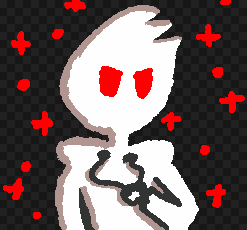

Evolution of My Character
First Doodles
The first ever drawing of my character was in a Swapdoodle note sent to a friend. This was only a random doodle made for fun, I never intended on it becoming anything more than that.
At the time I was really proud of this doodle. Not only did I make something that was somewhat cool in my mind, but I also made a character (even if it was basic). I liked this character so much that I started doodling it again.
The next drawing was made in Flipnote Studio 3D. I added more features to make him feel like a completed character. Later on I slightly revised this drawing to make it look better.
I liked this one so much I started using it as my profile picture everywhere. Up until this point, I never used an actual character drawing as my profile picture on anything except for Discord, so in my mind this was something to be proud of.
A fun thing about my character at the time is everything behind his body would have its colors inverted, like the Windows Inverted mouse cursor. This didn't last long, as it was ugly, although I still feel the concept had potential.
Sadly, I don't have much art from this era. Most of it was really bad anyways.
Personality
For his personality, I chose to make him evil. At the time that's just what I felt fit him the best, although I think I took it a little too far. Instead of being slapstick evil, he just straight up murdered people just because edgy. My "lore" reason why was so terrible that I'm not even going to put it here. He also almost always had the meh, annoyed face, only showing emotion sometimes  .
.
Accessorizing
So now this little dude is officially my character. Awesome! My problem was that he didn't really feel unique and he had no personality. Anybody can make a character that's a solid color and 3 tufts of hair. So, I decided to make some changes.
Scarf
The first thing was adding a red scarf. Originally this was drawn as a line around the neck, curving down near the end with an arrow tip at the very end. Later on I changed how I drew the scarf, instead making it thick and actually looking like a scarf. This involved removing the arrow tip at the end.
I still wasn't satisfied with these changes, however.
Redesign
One night, I decided to do what was supposed to be a complete redesign. It didn't end up being a complete redesign, but changes would still be made.
The first change would be giving my character better hair. As of writing, this still hasn't happened  . I did move the hair tufts from being along the right side of him to being on top of his head (where hair usually is).
. I did move the hair tufts from being along the right side of him to being on top of his head (where hair usually is).
The biggest change was adding a headset. I got the idea for this when attempting to transform a layer in Flipnote, and completely messed up the transformation. The transformation looked like a headset, so I tried adding a headset to my character, and I really liked it. Here's the final product of that redesign (ignore the message in blue, I only tweeted through Nintendo 3DS Image Share at the time):
Around this time I gave my character a consistent weapon: a chainsaw. Although he can be seen with a large variety of weapons, he is mostly known for using a chainsaw. There wasn't any specific reason why I chose a chainsaw, other than because it looks cool (and that's almost always a valid reason to do something). I also quit drawing him as much with that annoyed facial expression, sometimes even having him smile. Occasionally he just looked derpy during this era.
Later on I also gave him a single poking out tooth. Originally this was done to make fun of other characters, but it started to grow on me fast. You aren't immune to tooth poking out propaganda.
Toothpaste Boy
Happy Holidays
Usually I carry around both a red pen and a black pen. One day I found a dark green pen in the school hallway. It was the Christmas season, I was feeling a little festive, why not make a festive version of my character?
I made the red features on half his body green instead, giving him and red and green color palette. Red and green accents were added to the character's hoodie (although the sides each color was on were swapped), and the center of teh hoodie gained a snowman, with the drawstrings coming out of the snowman's eyes. I also turned the headset into earmuffs, but kept the microphone.
I also changed the chainsaw, replacing the teeth with alternating red and green light bulbs. How fun! I don't like the drawing I did with this enough to show it here. Sorry.
Redesign
Although the Christmas changes were really cool, they were intended to be temporary. However, that changed when a friend drew my character, but changed the colors from red and green to red and blue.
Not only did this color scheme work better outside of Christmas, but I liked the colors red and blue (in a non-patriotic way, of course). I liked this so much, it would become the new design for my character.
I did change the design on the hoodie, so instead of a snowman it was a stick figure with X eyes  . A template was also introduced, so the background of the hoodie could be changed, rather than it always being solid white.
. A template was also introduced, so the background of the hoodie could be changed, rather than it always being solid white.
The scarf also gained a red and blue gradient, which is very cool.
The chainsaw teeth became a red and blue gradient, also. In concept, this sounds really fun. In reality, while the chainsaw is spinning the teeth would just be purple. At least it looks cool while not in motion.